XR2の操作
XR2 Ravenstarのダウンロード+インストール
XR2の打ち上げ・軌道投入
XR2とAeroBrake MFDでの着陸
- 2Dコクピットと操作パネル
- APU（補助動力装置）
- ダメージ判定
- スクラムジェットエンジン
- Multi-Display-Area (MDA)とオートパイロット
- 燃料および酸素の補給
- 乗員の管理
- ペイロードの管理
2Dコクピットと操作パネル
XR2は3Dコクピットから操作できないので、主に2Dコクピットを使うことになります。
Ctrlキーを押しながら矢印キーを押すことで、上下左右のパネルにアクセスします。
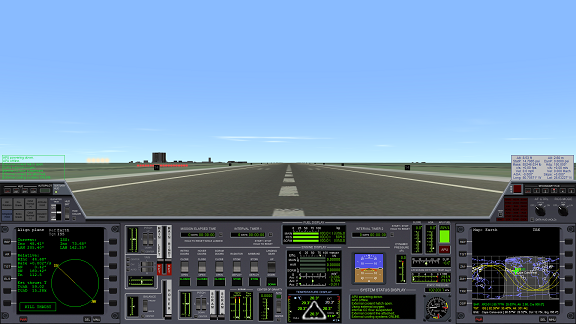
ウィンドウ解像度
ゲームウィンドウの解像度（≒大きさ）によって、パネルのレイアウトが変更されます。
目当てのボタンが見当たらないときは、上下のパネルに移動して探してください。
APU（補助動力装置）
XR2の油圧系統を駆動するためのエンジンです。
これを起動しないと動翼・エアロック・ラジエータなどが動きません。
APUは専用の燃料を必要とし、起動中は常に燃料を消費します。
燃料切れになると動作しなくなるので、必要に応じて起動したり停止したりします。
APUと書かれた赤いボタンを押して、起動・停止する。
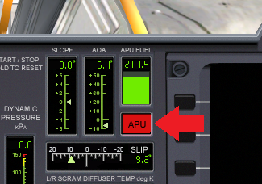
ダメージ判定
XRシリーズでは機体が被ったダメージに応じて、乗組員も負傷したり死亡したりします。※
※乗員がすべて死亡すると操作不能になりますが、破損状況によっては別の船から乗り込んで再起動することもできます
COOLANT TEMP（冷却材の温度）
温度が危険域を超えると、メインコンピュータがシャットダウンし生命維持装置が停止、乗員が酸欠死します。
対策は以下の通り。
地上およびドッキング中は、EXTERNAL COOLING（外部冷却システム）を使う。
（ボタンを押してONにするだけ。同時に酸素も補給されます）
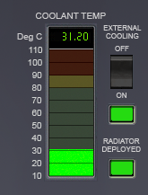
宇宙空間ではRADIATOR（ラジエータ）を展開する。
（ボタンを押して展開（DEPLOY）するだけ。再突入時に収納するのを忘れないように）

船体外壁の温度
キーボードの3を押すと、Multi-Display-Area (MDA)に表示されます。
赤より上が危険域です。放置すると、船体が損傷して乗員が焼死します。
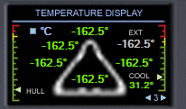
打ち上げ、大気圏突入のいずれにおいても「高度を上げる」もしくは「速度を落とす」ことで温度を下げることができます。
衝撃
落下の衝撃などによって、船体が損傷したり乗員が負傷・死亡したりします。
着陸時の降下速度（VS）については、2Dパネルの左下に目安が記載されています。
この速度を超えないよう、Surface MFDで確認しつつ着陸してください。
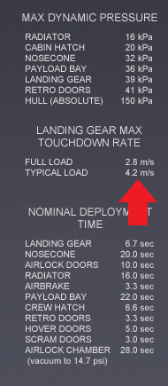
酸素
XR2には初期状態で14人が乗っていますが、彼らは酸素を消費し、酸素残量がゼロになると死亡します。
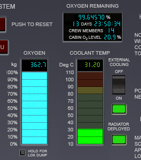
左下の青い棒グラフが酸素残量。
右上が乗組員の人数から計算される残り日数です。
地上では、エアロックを開放するか、前述のEXTERNAL COOLINGを起動しておけば、補充の必要はありません。
宇宙ステーションとのドッキング中は、エアロックを開放すると同じ効果があります。
火星などへの長距離飛行の場合は、後述するPayload Editorを使って、酸素タンクを増設することができます。
空気抵抗
車輪などが露出したり開放したままになっていたりすると、大気圏内を高速飛行中に機体が破損して着陸できなくなったりします。
警告が出たら減速してください。必要ないものは収納してください。
主翼荷重
急な旋回などによって主翼に大きな負荷がかかると、損傷して操縦不能になることがあります。
wing stressの警告が出たらゆるく旋回するようにしてください。
スクラムジェットエンジン
XR2にはスクラムジェットエンジンが搭載されており、これを使うことで推進剤を節約できます。
まず、メインエンジンでマッハ3まで加速。
SCRAM DOORSをOPENにします。
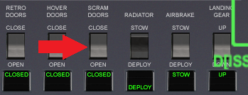
スクラムジェットを全開。（SCRAM LとSCRAM Rをマウス左ドラッグ）
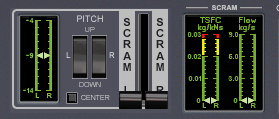
メインエンジンを停止します。
船体温度を確認しつつ加速。
危険域に達したら高度を上げます。
スクラムジェットの燃料が尽きるか、エンジンの温度が危険域に到達したらスクラムジェットエンジンを停止。
SCRAM DOORSをCLOSEにしてから、メインエンジンに切り換えます。
Multi-Display-Area (MDA)とオートパイロット
パネル中央の小さな画面がMDAです。
キーボードの0-9で機能を切り換えられます。
| 1 | オートパイロット：降下速度を維持・自動着陸(Auto-Land) |
| 2 | オートパイロット：機体の姿勢を維持 |
| 3 | 船体外壁および冷却材の温度 |
| 4-8 | 機体の破損状況を確認 |
| 9 | 再突入チェックリスト |
| 0 | オートパイロット：対気速度を維持 |
このうち、重要なのは1(DESCENT HOLD)、2(ATTITUDE HOLD)、3(TEMPERATURE)です。
DESCENT HOLD AUTOPILOT
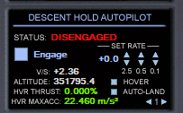
ホバーエンジンを制御します。
HOVER DOORSがOPENになっていないと使えません。
Engageを押すとシステムが起動。
初期状態だと高度を維持しようとします。
右のSET RATE（マウスクリックで操作）を調整することで降下速度を設定できます。
AUTO-LANDをクリックすると自動的に着陸します。
RCS・メインエンジン・逆噴射(RETRO)エンジンを使って降りたい位置に移動します。
ATTITUDE HOLD AUTOPILOT
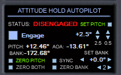
機体の姿勢（迎え角および左右への傾き）を制御します。
Engageを押すと起動します。
操作自体はRCS ROTとほぼ同じ。テンキーの2 or 8と4 or 6を押して操作します。
指定した角度を自動的に維持してくれるので、フライトスティックを長時間握り続ける必要がなくなります。
AeroBrake MFDと組み合わせることで、再突入して狙った場所に容易に降りられるようになります。
XR2とAeroBrake MFDでの着陸
燃料および酸素の補給
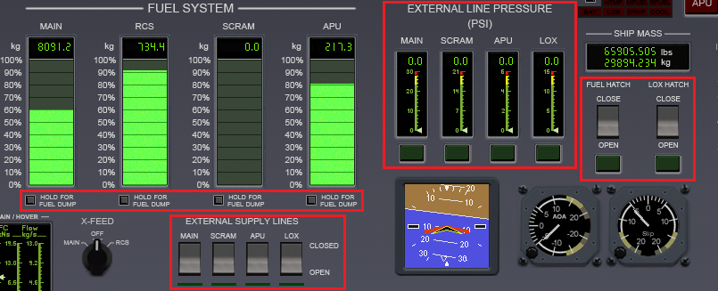
着陸中・宇宙ステーションへのドッキング中に、燃料・酸素の補給を受けることができます。
右側のボタンをクリックして、FUEL HATCH（燃料ハッチ）およびLOX HATCH（液体酸素ハッチ）をOPENにする。
補給ラインの圧力（EXTERNAL LINE PRESSURE）を確認する。
左下のEXTERNAL SUPPLY LINESのボタンをOPENにする。
燃料および酸素タンクが充填される。
燃料計の棒グラフの下の小さなボタンを長押しクリックすると、余分な燃料を排出できます。
乗員の管理
XR2はUMMU（Orbiterに宇宙飛行士を追加するMOD）に対応しています。
UMMUが最低でも1人は乗っていないと動きません。（Orbiter2010のみ。Orbiter2016では不要）
船外に降りる・ドッキング
以下の手順で宇宙飛行士を船外に降ろすことができます。（Orbiter2010のみ）
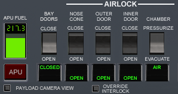
ノーズコーン(NOSE CONE)とエアロック（OUTER DOORとINNER DOORの両方）をOPENにする。
EVAのボタンをクリック。
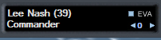
UMMUに対応しているほかの宇宙船やステーションとのドッキング中なら、UMMUは相手の船に移乗します。
機内に戻るときは、エアロックに十分近づいてからキーボードでEを押す。
DEPLOY TURBOPACKのボタンをクリックすると、機体前方にターボパックを放出します。
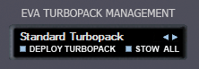
STOW ALLのボタンをクリックすると、近くにあるターボパックを回収します。
EVA（宇宙での船外活動）
宇宙空間や、地球以外の惑星でEVAをおこなう場合は、地球上とは手順が少し異なります。
まず、APUを起動しておく。
次に、上にCHAMBERと書かれたボタンを押してEVACUATE（減圧）にする。
（エアロック内の空気を抜いて、宇宙空間との気圧差を解消します）
NOSE CONEとOUTER DOORをOPENにする。
これらの手順を踏まないと、エアロックが開かないようになっています。
ペイロードの管理
XR2は、酸素タンクや燃料タンクなどを簡単に増設できるようになっています。
F8キーを押して2Dコクピットにする。
Ctrlキーを押しながら、十字キーの↑を押す。
Ctrlキーを押しながら、十字キーの←を押す。
これでペイロードの管理画面になります。
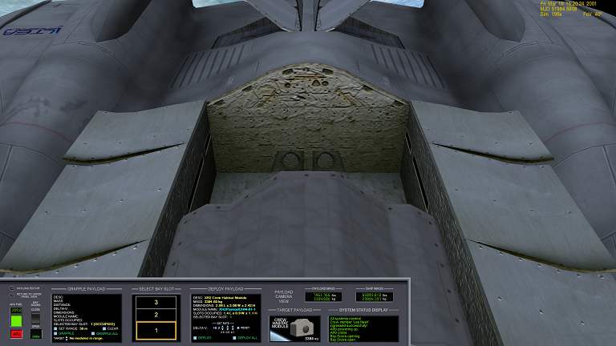
APUを起動して、BAY DOORSをOPENにすると格納庫のドアが開きます。
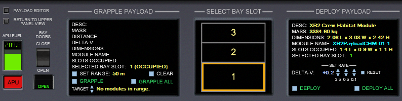
GRAPPLEのボタンを押せば、周囲にあるペイロードを搭載できます。
DEPLOYのボタンを押せば、現在のペイロードを投棄できます。
パネル左上のPAYLOAD EDITORの小さなボタンを押すと、ペイロードを自由に追加できるようになります。
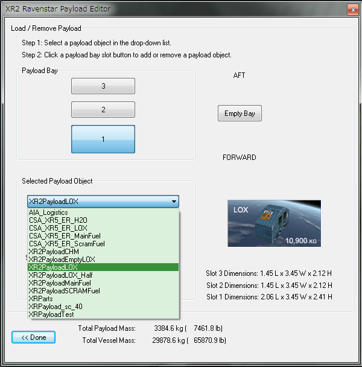
LOXが酸素、FUELが燃料です。
XR2とXR5で使えるコンテナの大きさが異なります。
プルダウンメニューから搭載したいものを選択してから、Payload Bayのボタンを押す。
指定した場所にコンテナが追加されます。
XR2の能力
XR2は酸素タンクを増設すれば、14人を乗せて単独で地球から火星基地まで飛行可能です。
ただし、それにはある程度のテクニックが必要になります。
ゲームに慣れてきたら、ぜひ挑戦してみてください。